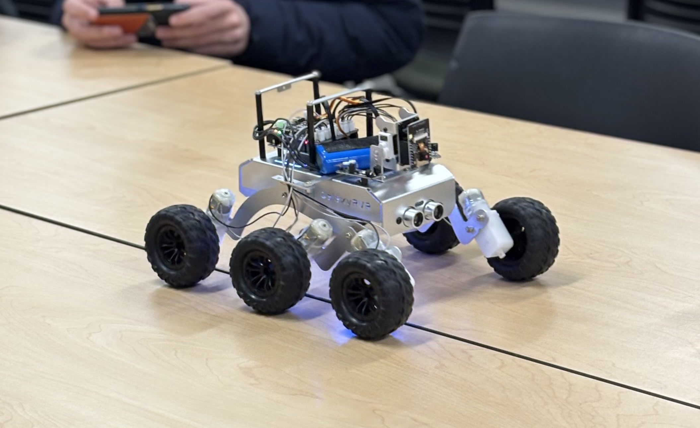
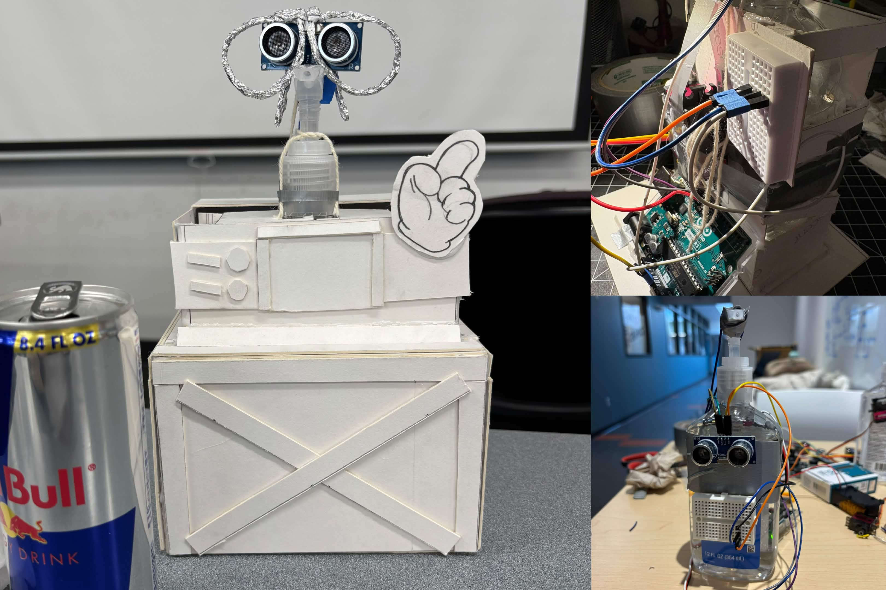
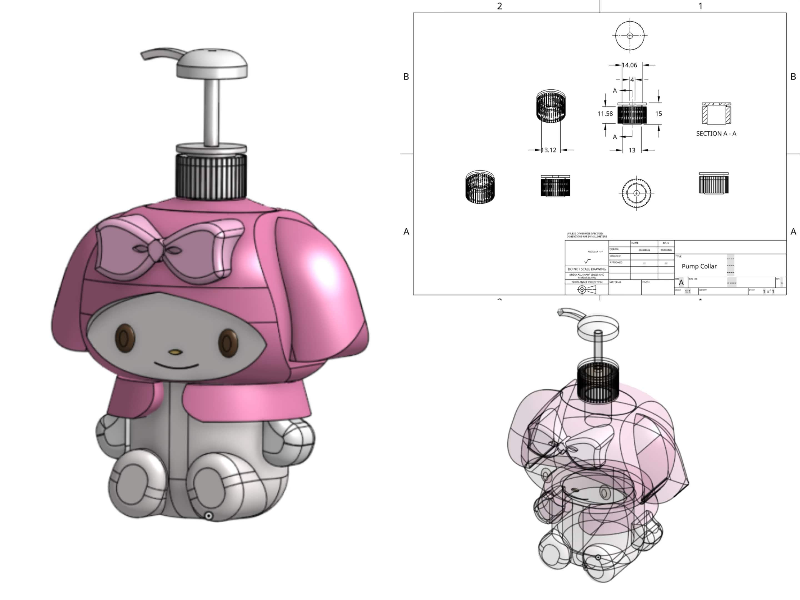

Projects
A selection of engineering and technical projects focused on prototyping, embedded systems, CAD-driven design, and hands-on product development.

RC Car Project
A microcontroller-based remote-controlled vehicle developed through the Bellevue College Robotics Club. This project focused on the integration of electronics, programming, and physical prototyping to produce a functional mobile system with wireless control capabilities.
As Vice President of the Robotics Club, responsibilities included co-leading the project workflow, supporting the design and assembly process, and contributing to the control logic programmed in C++. Work involved coordinating team progress, guiding members through iterative testing, and helping connect the mechanical frame, electronic components, and control system into a complete working prototype.

Wall-E Inspired Automatic Hand Sanitiz
A wall-e inspired automatic hand sanitizer dispenser designed to detect user presence and dispense sanitizer without direct contact. The project emphasized practical problem-solving through embedded systems, sensor-based interaction, and hardware-software integration.
As President of Women in STEM at Bellevue College, the project was led from concept to implementation, including organizing the build process, guiding team collaboration, and contributing to circuit design and control programming. The system required attention to component coordination, responsiveness, and reliable physical operation within a compact product format.

MyMelody Soap Dispenser CAD Design
A CAD-based product design project centered on the development of a themed soap dispenser that balanced functionality with visual design. The project focused on translating a conceptual product idea into a complete digital model with structured components and assembly considerations.
The full model was independently designed in Onshape, including individual parts, geometric relationships, and the overall assembly structure. Particular attention was given to form, proportion, and usability, while also treating the design as a prototyping exercise in consumer product development and mechanical layout.